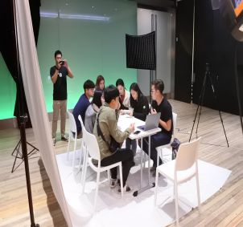
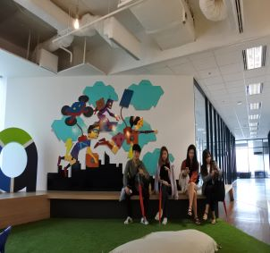
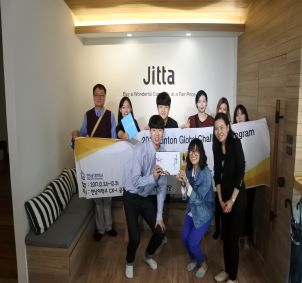
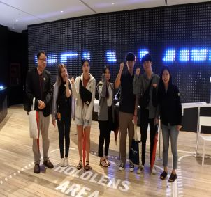

THAILAND
#Activity

A. Food story
Food story는 태국 방콕의 B2B서비스 회사로 search, promotion, reservation, POS, Review, loyalty, delivery 시스템이 하나로 통합되어 있는 어플리케이션을 관리하고 있다. 앱의 기능은 아래와 같다.

고객들은 앱을 통해 식당의 정보에 대해 미리 알 수 있으며 원하는 테이블을 예약할 수 있다. 그리고 온라인으로 메뉴와 가격을 알 수 있으며 모바일로 지불을 하고 리뷰를 달 수 있다.
이 앱은 고객뿐만 아니라 식당 관리 및 개발에도 도움이 된다. 앱을 통해 식당 측에서는 재고관리 및 고객관리를 할 수 있으며 포스 시스템으로 이용할 수 있어 거의 대부분의 식당에서 이 어플리케이션을 사용하고 있다고 한다.
이 앱을 사용하는 고객들을 위한 care center가 따로 있어 전화로 문제를 얘기하면 문제에 대해 분석하고 30분 안으로 해결할 수 있도록 관리하고 있다. 앱 하나로 고객과 식당의 모든 필요를 충족시킬 수 있으며 쉽고 빠르게 사용할 수 있고 언제 어디서든 사용할 수 있다는 장점이 있어 많은 사람들이 이용하고 있다.
우리가 푸드 스토리 회사에 인터뷰하러 갔을 때 Food story에서 먼저 자신들이 관리하고 있는 어플리케이션에 대해 자세히 설명해 주었기 때문에 질문할 것은 몇 가지 없었다.
Q. Food story 에서는 어떻게 수익을 내는가?
A. 앱을 통한 조회 수, 광고를 이용해 수익을 내고 있다.
Q. 테이블 예약이 가능하다면 no-show에 대해 어떻게 대처하고 있는가?
A. 사실 no-show에 대해 별다른 대처는 필요 없다고 생각한다. 앱 에서는 예약된 시간을 20분 이상 넘기게 된다면 자동으로 예약 취소되기 때문이다.
B. aCommerce
동남아시아에서 가장 큰 A 기금 중 하나를 모았던 aCommerce는 현재 방콕 지역 최고의 전자상거래 서비스 제공 업체이다. 인도네시아, 태국, 말레이시아, 싱가포르 및 필리핀에서 1,300 명이 넘는 재능 있는 직원과 운영진이 있는 aCommerce는 L'Oréal Group, LINE, Abbott, Unilever, Nescafe 등과 같은 글로벌 브랜드에 대한 강력한 현지화 된 전자 상거래 솔루션을 제공한다. aCommerce는 2013 년 5월에 설립되었으며 현재 방콕에 본사를 두고 있다.
Q. 브랜드가 직접적으로 소비자에게 향하려는 이유는 무엇인가
A. 흔히들 B2C(Business-to-Customer)라고 한다. 기업이 제공하는 물품 및 서비스가 소비자에게 직접적으로 제공되는 거래 형태를 설명하는 용어로 전자상거래가 대표적이다. 기업과 소비자 간의 직접 거래로 인해 중간 단계의 거래가 제외되므로 소비자는 할인된 가격으로 물품을 구입 할 수 있다. 이러한 장점을 통해 B2C는 인터넷상에서 물품의 구입과 판매가 일어나는 전자상거래의 급격한 성장을 일으켰다.
aCommerce는 소비자와의 직접적인 관계, 가격 책정 제어, 제품 분류 확장, 마진 개선, 브랜드파워 강화, 신제품 또는 시장 테스트, 시장 점유율 방어 및 확보, 영업 및 마케팅 데이터에 대한 액세스를 위해 B2C형태로 기업을 설립하였다.
aCommerce는 비즈니스의 각기 다른 단계에 맞는 D2C솔루션을 제공하며 운영 중이다.
1) Explore 시장 테스트 및 대상인식
• 시장에 신제품 출시
• 신제품 컨셉
• 오프라인 및 온라인 시장 모두에 대한 판매의 미숙
2) Expand 온라인과 시장 점유율 포착으로 매출을 증대시킴
• 이미 존재하는 제품
• 브랜드는 오프라인 판매 경험이 있기에 온라인으로 확장 할 계획
3) Accelerate 고객 지원 및 시장 주도적 위치 향상
• 제품이 이미 온라인 시장에 존재함
• 브랜드는 온라인 판매 경험이 있으며 다른 온라인 채널로 확장할 계획임
위 단계에 따른 aCommerce만의 고객 맞춤형 솔루션
1) Explore
①eSampling Campaign
②Campaign Pop-up Store
2) Expand
③Multi-channel Market Expansion
3) Accelerate
④Omni-Channel Solution
Q. 채용할 때 선호하는 인재상 및 요구하는 역량은 무엇인가?
A. 영어능력을 제일 중요시한다. 이곳 말고도 많은 회사들이 이제 기본적으로 필요한 것이 외국어능력일 것이다. 수많은 국가의 바이어들을 상대하고 타 국가로 진출을 노려야 할 때 외국어 능력은 필수이다.
영어 능력 외에도 디지털마케팅능력과 풍부한 경험을 요구한다. 경험은 절대 무시할 수 없는 배경이다. 얼마나 다양하고 깊은 경험을 한 사람인지 우리는 알고 싶어 한다.
Q. 한국으로 확대할 생각은 없는지?
A. aCommerce외에도 많은 태국 기업들은 항시 한국 진출을 노리고 있는 중이다. 하지만 스타트기업이 진입하기 어려운 환경 탓에 한국진출을 꺼려하고 있다. 그 주된 요인은 ‘대기업’이다.
(우리가 방문한 많은 회사들은 ‘재벌’이라는 단어를 알고 있을 정도로 한국은 상위 기업이 독식하는 환경으로 유명한 국가인 듯하다.) ‘재벌’과 ‘대기업’의 장악 때문에 한국 진출은 힘들기도 하고 한국에 진출을 해서 성공 할 것인지도 미지수라 생각해 한국 진출 계획은 가까운 미래엔 없다.
C. Jitta
우리가 제일 먼저 방문한 회사로써 “Jitta"는 주식을 분석하여 복잡한 주식을 조금 더 일반대중들이 편하게 다가 갈수 있도록 만들고자 세운 기업이다. 한마디로 빅 데이터를 이용하며 분석하여 대중들에게 리스크를 최소화 시켜주는 기업이다.

이들이 수익을 내는 방법은 돈을 결재하지 않고 볼 수 있는 정보도 많지만 결재를 하게 될 경우 따로 1대1 분석도 있으며 따로 이용할 수 있는 카테고리가 만들어지기 때문에 그것으로 수익창출을 한다고 한다. 그러나 아직까지는 초기 단계라 큰 수익은 없다고 한다. 또한, 이들의 주력무기는 그들이 브랜드, 기업가치 앞으로 미래 전망을 고려하여 점수를 자체적으로 매기는 "JITTA SCORE"란 것으로 투자하려 할 때 투자자들이 고려해야 할 종합적인 점수라고 보면 된다.
많은 엔지니어들이 분석하고 포트폴리오로 만들어 적용되는 것이기 때문에 "JITTA SCORE"(1위부터 랭크도 순서대로 기록 되어있음)에 대한 자부심이 대단해 보인다.
또한 이렇듯, 태국에서는 이러한 엔지니어들이 IT를 이용하여 플랫폼 형식으로 많은 창업이 이뤄나고 있다고 한다. 추가적으로 해외에 나가고 싶은 학우들은 시대에 맞게 기술과 언어를 터득한다면 좋은 기회가 분명 주어진다고 강조했다.
D. Seekster
Seekster는 장기간이 아닌 단기간 동안 청소나 수리(Cleaning & Repair) 등 서비스를 플랫폼을 통해 제공하는 기업이다. Seekster에서는 창업의 계기를 태국의 창업 시스템에 대해서 설명해주셨다. 요즘 Airbnb, Uber, Grab, facebook, 트위터 등과 같은 플랫폼들이 성장함에 따라 창업을 하게 되었다고 하였다.
태국이라는 나라는 ASEAN 국가에서 GDP 2위이고, 지리적 위치도 좋다. 아시아에서 6시간 이내로 이동할 수 있는 국가가 많다. 또 중요한 한 가지는 플랫폼을 이용할 수 있는 핸드폰을 인구의 90%가 소지하고 있고 인당 여러 개(1.33%)의 핸드폰을 소지하고 있다. 이는 APP 사용자들이 활동적이라는 것을 알 수 있었다.
또한 왜 단기간으로 서비스를 제공하는 구조인지 보자면, 사람들은 매일매일 청소나 수리를 하고 싶어 하지 않는다. 또한, 숙박업소 또한 한 달에 4번 이런 식으로 매일 요구하는 것이 아니라 소량으로 단 한번만 필요한 것이다. 때문에 고객의 요구에 따라 서비스를 제공할 수 있는 것이다. 여기서 우리는 또 하나의 궁금증이 있었다. 그것은 신뢰성이었다.
우리나라에서는 Uber, Grab 또는 Airbnb와 같은 개인적으로 직접 운영하는 것에 대해서 신뢰하지 않을뿐더러 범죄도 간혹 일어난다. 하지만 청소, 수리 서비스를 제공해주는 사람은 직원이 아닌 개인이었다. 이를 보장할 수 있는 방법을 물어보았고 그에 대한 답은 대한민국과는 다른 태국의 환경이 물론 있지만, 고용인에 대한 배경조사를 하며 교육을 통해 해결한다고 하였다.
E. G able
G able과의 미팅은 G able 본사와 같은 건물에 위치한 dtac Co-working space에서 이루어졌다. G able의 스타트업 지원사업의 협력사인 Hatch, InsightEra, Thai Fintech association과 함께 총 4개 기업의 미팅이 함께하였다.
먼저 한남대학교에 대한 간단한 소개와 대한민국의 청년창업시장 현황에 대해 간단히 발표한 후, G able, Hatch, InsightEra, Thai Fintech association순으로 PPT와 함께 기업에 대한 설명을 듣고 G able 회사 내부를 견학하였다.
G able은 1970년에 설립되어 최초로 태국의 IT인프라와 메인 프레임, 서버를 구축할 수 있도록 기여한 회사이다. 2000년대에 들어 태국 최초의 기업 플랫폼 구축을 도왔으며 2010년 이후로는 기업에게 빅데이터 분석 및 컨설팅을 제공하고 있다.
또한 G able은 주로 국가차원의 프로젝트에 중점을 두고 시작한 기업이라고 말씀해주셨다. 태국의 주요 대기업을 대상으로 29년 이상의 경험이 있으며 그 외 글로벌파트너로 마이크로소프트, IBM, Oracle, Cisco, HP 등과 같은 큰 회사들과도 제휴를 맺고 있는 회사이다.
현재 G able은 3가지의 큰 솔루션을 가지고 회사의 Ecosystem을 구성하고 있다.
첫째로 설립 이후 안정기에 든 이후부터 Foundation역할을 하는 ‘Infrastructure’에서는 복잡한 인프라를 안정적으로 관리를 해주는 데이터 센터 운영을 위해 Cloud Infrastructure, IT Operation Management, Oracle Solution에 포커스를 맞추고 있다.
두 번째로 현재까지 맞춤형 기업 솔루션을 제공하여 고객기업의 경쟁력을 높일 수 있도록 하는 것이 회사의Core 역할이며 이를 Enterprise Business를 통해 수행해 나가는데 주로 Digital Marketing, Enterprise Business, Enterprise Communication, Microsoft Solutions으로 이루어져 있다.
마지막으로 첨단 디지털 기술로 혁인 주도 솔루션 구현 Frontier인 Modern Digital에서는 Big Date & Analytics, Advance Technologies, Security, Cloud Applications등의 서비스 구축을 위해 연구, 개발, 시도 중에 있다.
G able은 혁신기업가 양성 교육 컨설팅회사 Hatch와 대학교 KMUTT(1960년 설립, King’s Mongkut Univrsity of Technology Thonburi)와 합작을 통해 Consultancy, Funding, PR, Internship 크게 네 가지로 스타트 업을 지원하고 있다. Gable, Hatch는 기술기반 대학인 KMUTT학생들의 연구물을 상업화하기 위한 지원을 하며 사용자 중심의 기술이 시장 수요로 연결될 수 있도록 연구자본 제공과 컨설팅을 해주고 있다.